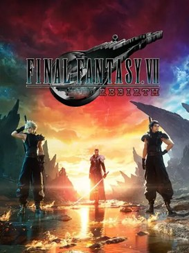

RPG d'action en monde ouvert
RPG d'action en monde ouvert
Cyberpunk 2077
CD Projekt RED · PC, PS5, Xbox Series, Switch 2
Night City, ses gangs, ses fixers et ses implants : toutes les missions, tous les contrats et l'extension, sans rien laisser derrière toi.
Interligne
Espacement des lettres
Police
Souls-like · 2016
Zone par zone, dans l'ordre le plus sûr : chaque boss, chaque PNJ, chaque objet, jusqu'aux deux extensions.

Calculé à partir des cases que tu as cochées dans le guide, sur cet appareil.
Clique sur une partie pour l'ouvrir directement dans le guide. Les compteurs suivent les cases que tu coches.
RPG d'action en monde ouvert
CD Projekt RED · PC, PS5, Xbox Series, Switch 2
Night City, ses gangs, ses fixers et ses implants : toutes les missions, tous les contrats et l'extension, sans rien laisser derrière toi.
 Souls-like en monde ouvert
Souls-like en monde ouvert
FromSoftware · PC, PS5, PS4, Xbox Series, Xbox One, Switch 2 (Tarnished Edition)
L'Entre-Terre région par région, puis le Royaume des Ombres : sites de grâce, quêtes de PNJ, boss et trésors.

RPG d'action en monde ouvertSquare Enix · PS5, PC, Switch 2, Xbox Series
Région par région : quêtes annexes, mini-jeux, Matérias et tout ce qu'il faut pour le 100 %.